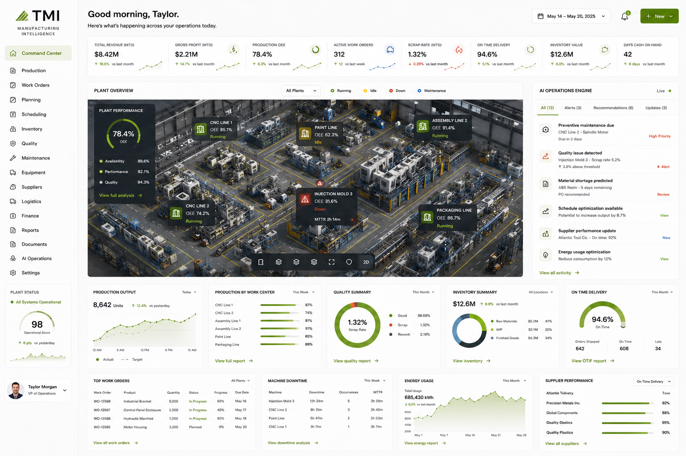

Production floors, machine shops, fabrication facilities, and industrial operations. We build the systems that give you real-time visibility and automate the work that slows your floor down.
The gap between what your floor produces and what your data shows you is where margin disappears. Manual processes, equipment downtime, and slow reporting compound the problem.
Maintenance scheduled by calendar instead of condition means unexpected breakdowns that stop production lines and generate emergency repair costs.
Output, defect rates, and throughput tracked in spreadsheets updated end-of-shift means you're always making decisions with yesterday's data.
Custom work orders, material costs, and labor hours reconciled manually at month end - creating invoice lag and missed cost recovery.
AI-triggered maintenance based on equipment performance data - preventing failures before they stop your floor.
Real-time dashboards showing output, cycle times, defect rates, and OEE - updated continuously, not end-of-shift.
Material, labor, and machine time captured automatically per job order - invoices generated on completion with full cost detail.
Raw material levels, work-in-progress, and finished goods tracked in real time - with automated reorder triggers.
QC inspections logged digitally, defect data tracked by machine and operator, and compliance documentation maintained automatically.
Production schedules built and adjusted automatically based on orders, machine availability, and crew capacity.
Live OEE by machine, production output, quality summary, inventory, machine downtime, and your AI operations engine - all in real time, without anyone pulling reports.

Built for production floors where every hour of downtime has a dollar cost and every manual process is a margin problem waiting to be solved.
AI-triggered maintenance based on equipment performance - prevent failures before they stop your floor.
Raw material levels, WIP, and finished goods tracked in real time with automated reorder triggers.
Quality certifications, regulatory docs, and audit records maintained automatically across the floor.
OEE, throughput, defect rates, and cost-per-unit tracked live - not end-of-shift.
Operators log production data, QC inspections, and shift notes digitally from the floor.
Safety incidents logged, root causes tracked, and corrective actions managed without paper forms.
Machine specs, operating procedures, and troubleshooting guides searchable from any device on the floor.
Operator certifications tracked, training modules assigned, and skill gaps surfaced automatically.
Equipment status, sensor data, and anomaly alerts tracked in real time across the production floor.
A live operational model that surfaces bottlenecks, simulates capacity changes, and flags inefficiencies.
One call. We walk every process, bottleneck, and gap in your workflow. Nothing gets assumed. Nothing gets skipped.
Custom intelligent infrastructure built specifically for how you operate. Done for you. 14 days max. No templates. No generic software.
Your team gets trained. The system runs. We stay on for support. You never deal with a generic software vendor again.
Tracks every work order from release to shipment in real time. Bottlenecks surface before they delay delivery.
Inspection results, defect rates, and rework events logged at each stage. Quality issues show up in data before they reach customers.
Raw material levels, WIP, and finished goods tracked in real time. Reorder triggers fire automatically before production stalls.
Machine downtime gets logged at the source. Availability, performance, and quality metrics feed into OEE automatically.
Every open purchase order tracked against expected delivery. Delays surface before they shut down a production line.
Shift production, labor hours, and output per operator captured automatically. Productivity is visible without waiting for end-of-day reports.
We build a live tracking layer that captures work order status, machine utilization, and output at the point of work - not after the shift ends. Supervisors see what is happening on the floor in real time.
Yes. Inspection results and defect data get captured at each stage and tied to the work order. Patterns show up in the data before they become customer complaints or rework costs.
Material levels are tracked in real time. When raw stock drops below threshold, reorder triggers fire automatically. You stop finding out you are out of something when production is already stopped.
We build around what you have. The infrastructure fills the gaps - usually the manual steps and data entry that currently live between systems.
14 days from the mapping call to deployment, including training for production and management staff.
Tell us about your manufacturing operation. We'll build around your equipment, workflows, and output goals.
Every engagement starts with the Complete Audit. We map exactly how your business runs, then delete the software you don't use, connect what's left, and build the systems and AI that run it. You own what we build.
We audit your stack and cut the software nobody uses. Less to manage and smaller bills, from day one.
We wire what is left into one operational layer, so nothing lives in a silo and the whole operation is visible.
We build the systems and AI that run the work you used to run by hand. Deployed, your team trained, handed over.
One door in. Every engagement starts with the Complete Audit: a detailed map of your operation, your Intelligence Score, and the 30-day plan to fix it.
Take the intelligent company audit →Related Industries